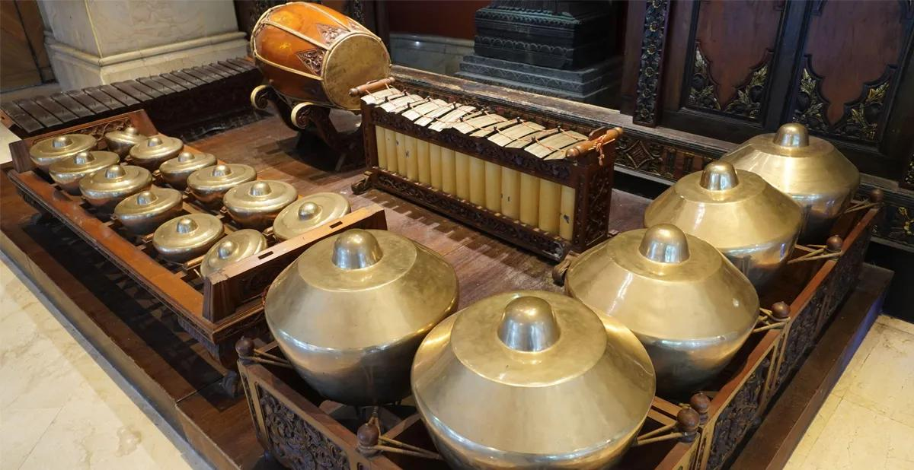
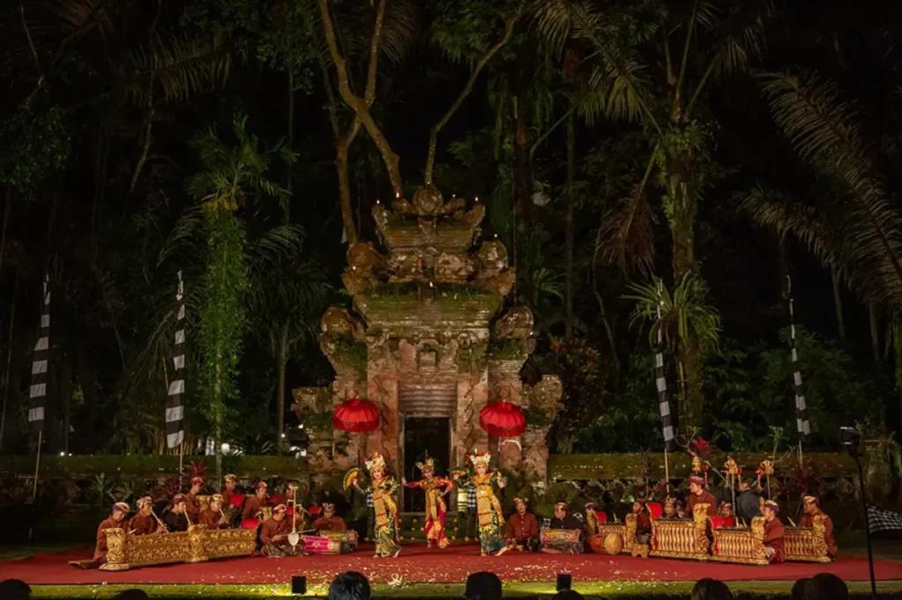
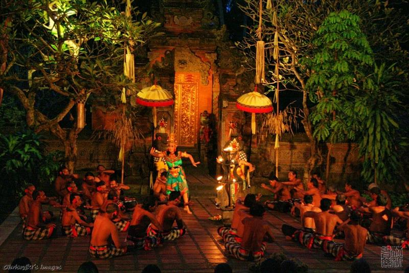
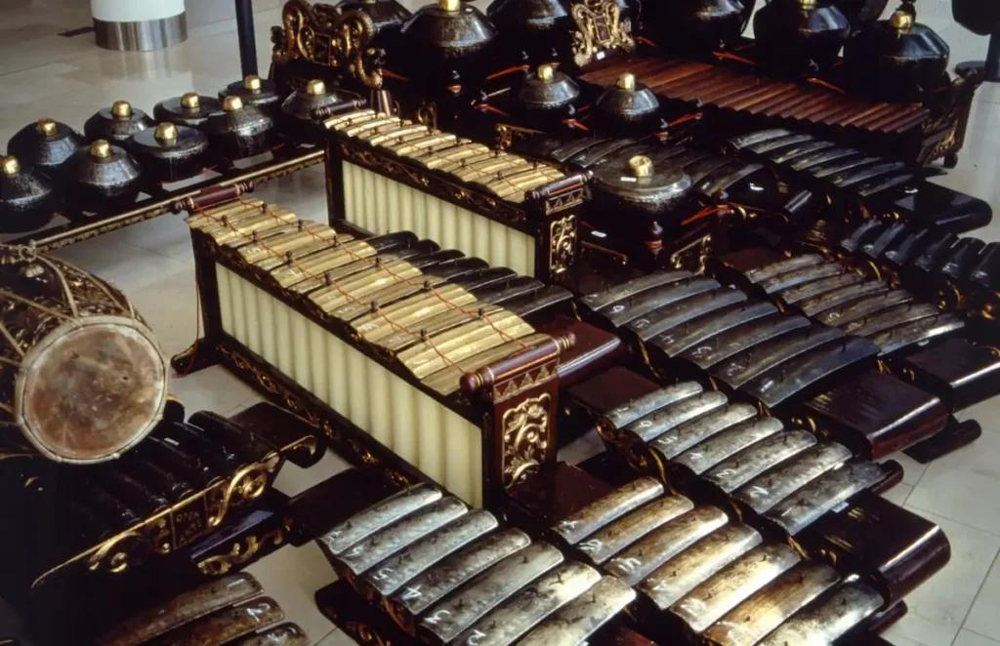
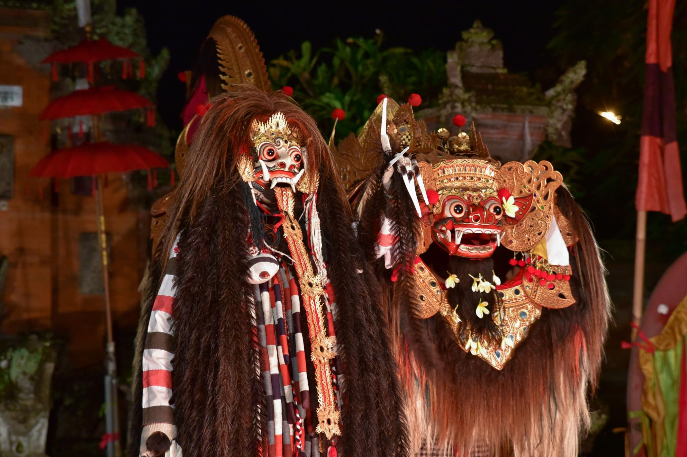

Bali (Dutch East Indies), late 1920s — rhythm that doesn’t yield
The sound reaches you before the light does.
Metal, not soft—struck, not drawn.
By the time you enter the courtyard in Bali—then part of the Dutch East Indies—the music is already in motion. Not building. Not beginning.
Continuing.
The sound
An ensemble of Gamelan fills the space:
metallophones ringing in layered patterns
gongs marking cycles you don’t yet understand
rhythms interlocking faster than you can track
You try to find a lead.
There isn’t one.
The music is not linear. It is simultaneous.
The structure (you feel it before you grasp it)
Everything is organized—but not visibly.
Patterns repeat, but not simply. One line fills the gaps of another. Speed increases without feeling rushed.
This is interlocking rhythm—no single player carries the whole.
If one stops, the structure collapses.
The dancers
They don’t enter casually.
Movement begins already formed:
eyes sharply directed
fingers extended, precise
gestures segmented, controlled
This is not improvisation.
It is exact.
The relationship
Unlike Havana or Rio:
musicians and dancers are not separate roles
neither is “accompanying” the other
They are parts of the same system.
The dance does not sit on the music.It exists inside it.
The audience
You are not the center.
Locals sit, watch, move slightly, adjust.
This is not staged for you—even if you are allowed to be present.
There is no sense of performance trying to reach outward.
The difference
If Paris (Le Train Bleu) frees the body,and Havana asks you to find the rhythm,
Bali does something else:
It removes the idea that the individual body is the center at all.
The colonial layer
You are aware—quietly—that this exists within a colonial frame.
European visitors come, observe, document, sometimes romanticize.
But the structure you’re witnessing:
does not originate from them
does not adjust itself for them
Not yet.
The feeling
You stop trying to follow it as music.
Instead, you experience it as:
pattern
density
coordination
Time doesn’t move forward.
It cycles.
What lingers
As the final gong resonates—longer than expected, longer than seems necessary—you realize:
Nothing resolved.
Nothing needed to.
The line to carry
Walking away, the sound still layered in your head, you understand:
This isn’t music built around the individual.It’s a system the individual enters—and never fully controls.